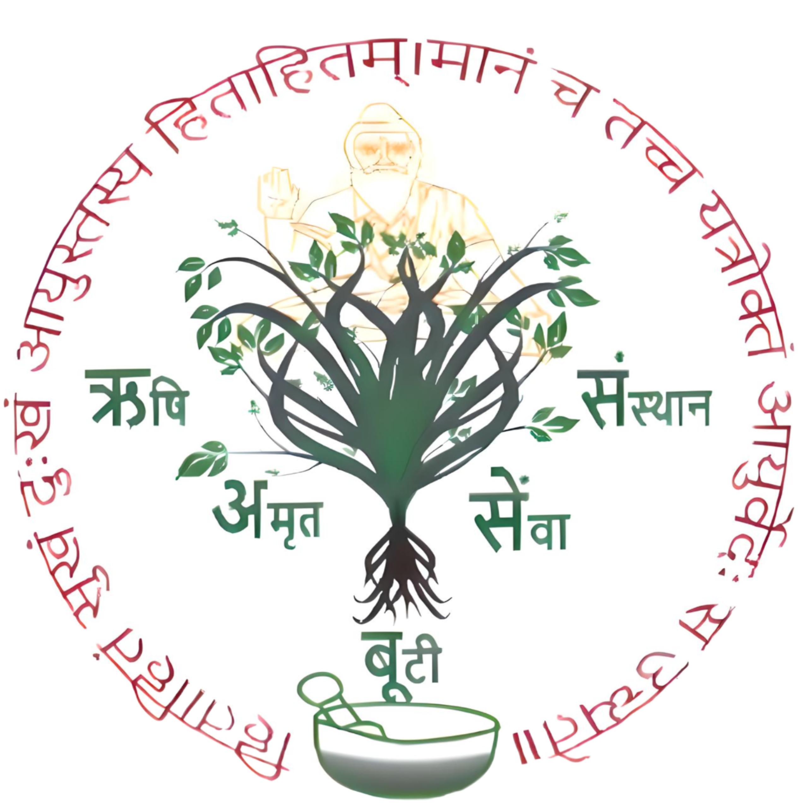

+91 9584617477
,
+91 9584617477
11:00 AM - 1:00 PM, 05:00 PM - 8:00 PM
MONDAY - SUNDAY, TUESDAY (HOLIDAY)

॥ श्री धनवंतरी स्वरूप श्री श्री श्री औषधचक्र नारायणाय नमः ॥
॥ हिता हितं सुखं दुखम आयुस्तस्य हिता हितं। मानं च तच्च यात्रोक्तम आयुर्वेद सः उच्यते ॥
RISHI AMRTI BOOTI SEWA SANSTHAN, BHARAT
ऋषि अमृत बूटी सेवा संस्थान, भारत
गुरु जी डॉ. गोविंद, आयुर्वेदाचार्य
Guruji Dr. Govind, M.D.
Herbs Specialist & Spiritual Yoga Guru
जड़ी-बूटी विशेषज्ञ एवं आध्यात्मिक योग गुरु
RABSS
Home
About Us
Holistic Health
Patients & Cure
Herbs & Uses
Contact Us
News
Gallery
FAQ
FAQ